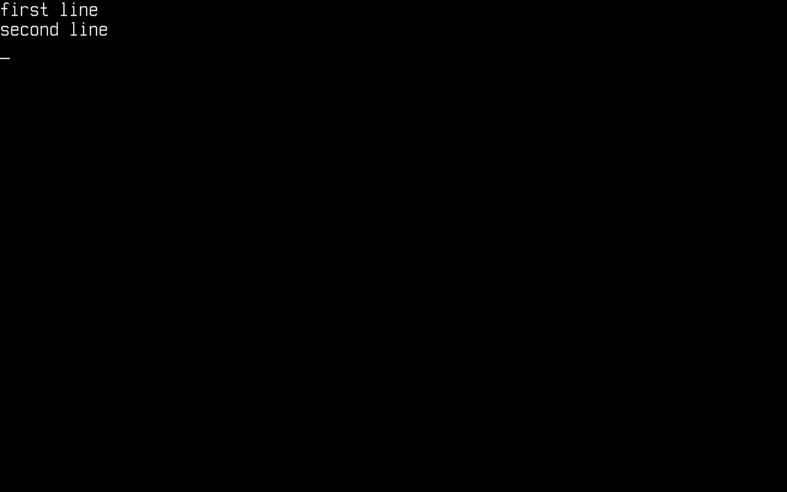

Système de fichiers
Dans cet article, nous verrons comment utiliser le VFS (système de fichiers virtuel) de Cosmos Gen3.
Contrairement à Gen2, où vous passiez par CosmosVFS et par un sous-ensemble de System.IO remplacé par des plugs, Gen3 vous donne l'API System.IO standard de .NET (File, Directory, FileStream, StreamReader/StreamWriter, FileInfo/DirectoryInfo), qui s'exécute sans modification au-dessus du VFS du noyau. Vous montez un système de fichiers sur un point de montage de style Unix et vous utilisez des chemins absolus ordinaires.
Les principales différences si vous venez de Gen2 :
| Gen2 | Gen3 | |
|---|---|---|
| Chemins | Lettres de lecteur DOS (0:\file.txt) |
Chemins Unix (/mnt/file.txt) |
| Mise en place | CosmosVFS + VFSManager.RegisterVFS |
VfsManager.RegisterFileSystem + VfsManager.TryMount |
| Surface d'API | Sous-ensemble de System.IO remplacé par des plugs |
System.IO complet (flux, motifs d'énumération, FileInfo, …) |
File.Move |
Sans plug (copie + suppression) | Fonctionne, y compris l'écrasement d'une destination existante |
| Systèmes de fichiers | FAT32 (FAT12/16 en partie), ISO 9660 | FAT12/16/32, ext2, ISO 9660 avec Rock Ridge (lecture seule) |
| Fichiers sur l'ISO | Un dossier isoFiles dans le projet |
Le même dossier isoFiles, plus des éléments CosmosIsoFile (Livrer des fichiers sur l'ISO de démarrage) |
Attention : formatez toujours votre disque avec Cosmos, et uniquement avec Cosmos, si vous comptez l'utiliser avec Cosmos. Des outils comme Parted ou FDisk sont bien plus avancés et peuvent organiser le disque autrement que ce qu'attend Cosmos.
AVERTISSEMENT : n'essayez pas ceci sur du vrai matériel ! Cela peut causer des DOMMAGES IRRÉPARABLES à vos données. Utilisez une machine virtuelle (QEMU via cosmos run, VMware, VirtualBox, …).
Activer le stockage dans votre noyau
La prise en charge du stockage dépend d'un commutateur de fonctionnalité. Vérifiez que le .csproj de votre noyau ne la désactive pas (sa valeur par défaut est true) :
<PropertyGroup>
<CosmosEnableStorage>true</CosmosEnableStorage>
</PropertyGroup>
Au démarrage, le noyau initialise StorageManager, qui installe son consommateur des périphériques bloc du kit de pilotes. Les pilotes AHCI, NVMe, virtio-blk et de stockage de masse USB du kit publient ensuite chaque disque SATA (sata0, sata1, ...), chaque namespace NVMe (nvme0n1, ...), chaque disque virtio-blk (vblk0, ...) et chaque clé USB (usb0, usb1, ...) qu'ils trouvent pendant l'étape des pilotes, et le gestionnaire enregistre chacun au moment où il est publié et analyse sa table de partitions MBR/GPT pour en remplir StorageManager.Partitions avant que la publication ne rende la main. Les clés USB nécessitent CosmosEnableUsb, activé par défaut dès que CosmosEnableStorage l'est ; le passer à false conserve les disques AHCI et NVMe et retire les disques USB en même temps que les pilotes de contrôleur hôte. Le gestionnaire tient ses tables dans un seul ordre, qui décide du périphérique principal : par chemin de nœud, pci: avant usb: avant virtio:, dans Devices, dans Partitions et pour PrimaryDevice ; un disque que le noyau a enregistré lui-même vient après tous les disques du kit ; puis l'ordre d'enregistrement. Ainsi, un disque interne sur un contrôleur PCI est le principal face à une clé USB présente au démarrage, quel que soit celui qui s'est enregistré en premier, et un disque du kit arrivé après une clé USB passe devant elle et renumérote Partitions : c'est pourquoi un montage par Partition (voir plus bas) est préférable à un montage par chaîne d'index.
Les disques USB, ainsi que les disques virtio-blk derrière un emplacement PCI Express à branchement à chaud, peuvent aussi être branchés et retirés pendant que le noyau tourne. Un disque branché est publié par le kit, puis enregistré et analysé comme un disque trouvé au démarrage, sous le plus petit nom usbN ou vblkN libre. Un disque débranché est retiré : il quitte StorageManager.Devices et StorageManager.Partitions, les montages faits sur ses partitions avec la surcharge Partition de TryMount (voir plus bas) sont détachés, et les fichiers encore ouverts dessus échouent avec IOException (le pilote de stockage de masse USB lève IOException("USB device detached") et le pilote virtio-blk IOException("virtio-blk device detached"), de même que le pilote NVMe lève IOException pendant qu'il se détache) ; un disque dont le kit a libéré la mémoire du pilote échoue plutôt avec l'InvalidOperationException du kit, car l'anneau supporté n'enveloppe pas le périphérique du pilote. Un montage fait à partir d'une chaîne source ne désigne aucun disque : il reste donc en place, et ses E/S échouent de la même façon. Un montage détaché n'est pas vidé sur le disque, puisque le disque n'est plus là : appelez donc VfsManager.TryUnmount avant de retirer un disque. Les deux listes peuvent changer entre deux lectures pendant qu'un disque USB ou virtio-blk arrive ou s'en va, depuis le thread de travail du kit : lisez Devices ou Partitions une seule fois et indexez cette copie.
Pour donner un disque à votre noyau dans QEMU, attachez une image avec cosmos run :
$ qemu-img create disk.img 64M
$ cosmos run --disk disk.img # attached as an AHCI disk (default)
$ cosmos run --disk disk.img,nvme # or as an NVMe namespace
$ cosmos run --disk disk.img,usb # or as a USB stick on an xHCI controller
$ cosmos run --disk disk.img,virtio-blk # or as a virtio-blk-pci function
$ cosmos run --disk disk.img,virtio-blk-mmio # or, on arm64, in the virt machine's virtio-mmio window
--disk peut être répété si vous voulez plusieurs disques. Un disque usb donne aussi à la machine son contrôleur xHCI, usbxhci0 ; --usb-controller ehci ou ehci-ohci y place plutôt un EHCI, usbehci0, et ohci un OHCI, usbohci0, chacun rattachant chaque périphérique USB à l'un de ses ports racines. Le contrôleur vous permet de brancher une autre clé et de la retirer pendant que le noyau tourne, depuis le moniteur QEMU (Ctrl+Alt+2 dans la fenêtre QEMU) :
(qemu) drive_add 0 if=none,id=stick,file=stick.img,format=raw
(qemu) device_add usb-storage,drive=stick,id=stick,bus=usbxhci0.0
(qemu) device_del stick
Enregistrer un pilote de système de fichiers et le monter
Voici les using sur lesquels s'appuient les extraits ci-dessous :
using System.IO;
using Cosmos.Kernel.HAL.Devices.Storage;
using Cosmos.Kernel.System.FileSystem;
using Cosmos.Kernel.System.FileSystem.Fat;
using Cosmos.Kernel.System.Storage;
Cosmos.Kernel.System.FileSystem contient tout le VFS dans un seul espace de noms : le gestionnaire et ce qu'il distribue (VfsManager, VfsMount, IVfsNodeHandle, IVfsFileHandle et IVfsDirectoryHandle), les contrats qu'implémente un pilote de système de fichiers (IVfsFileSystemType, IVfsSuperblock, IVfsInode, IVfsOpenFile et leurs interfaces d'opérations), ainsi que les types d'indicateurs, de modes et de métadonnées que nomme chaque appel de montage, de création et de stat (MountFlags, VfsMode, VfsStat, VfsStatFs, SetAttrFlags, SeekWhence, VfsTimespec). C'est pourquoi MountFlags.None apparaît dans le BeforeRun() d'un noyau sous le même using que VfsManager, et pourquoi l'IVfsInode que vous donne IVfsNodeHandle.Inode ne demande aucun autre using. Les pilotes de système de fichiers se trouvent un niveau plus bas, chacun dans son espace de noms : les types FatFileSystemType et FatFormatOptions du pilote FAT sont dans Cosmos.Kernel.System.FileSystem.Fat, le Ext2FileSystemType du pilote ext2 dans Cosmos.Kernel.System.FileSystem.Ext2, et le Iso9660FileSystemType du pilote ISO 9660 dans Cosmos.Kernel.System.FileSystem.Iso9660.
Cosmos.Kernel.HAL.Devices.Storage n'est nécessaire qu'à l'extrait du disque RAM plus bas, qui implémente IBlockDevice. Sans lui, monter une vraie partition demande les trois espaces de noms de Cosmos.Kernel.System.
Commencez par enregistrer un pilote FAT sous le nom de votre choix, puis montez une partition sur un point de montage. Ajoutez ceci au BeforeRun() de votre noyau :
FatFileSystemType fat = new();
if (!VfsManager.RegisterFileSystem("fat", fat))
{
Console.WriteLine("The name \"fat\" is already registered.");
return;
}
if (StorageManager.Partitions.Count == 0)
{
Console.WriteLine("No partitions found.");
return;
}
if (VfsManager.TryMount("fat", StorageManager.Partitions[0], MountFlags.None, "/mnt", out VfsMount? mount))
{
Console.WriteLine("Mounted " + mount.Name + " at " + mount.MountPoint);
}
Partitions est vide avant l'analyse du stockage, quand aucun disque n'est attaché et quand le stockage est exclu de la compilation : ne l'indexez donc qu'après avoir vérifié Count. Chaque appel ci-dessus indique s'il a réussi : RegisterFileSystem refuse un nom déjà utilisé, et TryMount refuse une source que le pilote ne reconnaît pas.
StorageManager.GetPartitions(device) liste les partitions d'un seul disque, numérotées comme un utilisateur les numérote ; StorageManager.Partitions est la liste à plat de tous les disques.
Il existe une seconde forme, VfsManager.TryMount("fat", "0", ...), où source est une chaîne propre au pilote. Tout pilote en accepte une, et le pilote FAT la lit comme un index dans StorageManager.Partitions. Préférez la surcharge Partition : créer ou supprimer une partition renumérote cette liste, si bien qu'un index conservé par-delà une nouvelle analyse peut finir par désigner une autre partition.

À partir de là, tout ce qui se trouve sous /mnt est servi par le pilote FAT, et tout le reste de cet article n'est que du System.IO ordinaire.
Remarque : / lui-même est une racine virtuelle. Elle existe toujours, même quand rien n'est monté, et l'énumérer liste les points de montage. Vous ne pouvez pas y créer de fichiers directement (IOException, système de fichiers en lecture seule) ; créez-les sous un point de montage comme /mnt.
Alternative : un disque RAM
Pour des essais rapides, vous n'avez même pas besoin d'image disque. Un périphérique bloc n'est qu'un IBlockDevice (de Cosmos.Kernel.HAL.Devices.Storage), et un périphérique adossé à la RAM tient en quelques lignes ; c'est exactement ce qu'utilisent les suites de tests du noyau :
internal sealed class MemoryBlockDevice : IBlockDevice
{
private readonly byte[] _storage;
public MemoryBlockDevice(string name, ulong blockSize, ulong blockCount)
{
Name = name;
BlockSize = blockSize;
BlockCount = blockCount;
_storage = new byte[blockSize * blockCount];
}
public string Name { get; }
public ulong BlockSize { get; }
public ulong BlockCount { get; }
public void ReadBlock(ulong blockNo, ulong blockCount, Span<byte> data)
=> _storage.AsSpan((int)(blockNo * BlockSize), (int)(blockCount * BlockSize)).CopyTo(data);
public void WriteBlock(ulong blockNo, ulong blockCount, ReadOnlySpan<byte> data)
=> data.Slice(0, (int)(blockCount * BlockSize)).CopyTo(_storage.AsSpan((int)(blockNo * BlockSize)));
public void Flush() { }
}
Le pilote FAT accepte directement un périphérique injecté. Enregistrez-le comme d'habitude et laissez source vide : avec un périphérique déjà en main, le pilote n'a rien à chercher.
MemoryBlockDevice ramDisk = new("RAMDISK", 512, 65536); // 32 MiB
FatFileSystemType fat = new(ramDisk);
if (!VfsManager.RegisterFileSystem("ramfat", fat)
|| !VfsManager.TryFormat("ramfat", "", new FatFormatOptions { Type = FatType.Fat16 })
|| !VfsManager.TryMount("ramfat", "", MountFlags.None, "/mnt", out _))
{
Console.WriteLine("RAM disk setup failed.");
return;
}
Lire un CD-ROM ou une image ISO
Iso9660FileSystemType, dans Cosmos.Kernel.System.FileSystem.Iso9660, lit le format des CD-ROM et des images .iso que produisent tous les outils de gravure et cosmos build : ISO 9660 avec l'extension Rock Ridge, qui est ce qui donne à un volume ses noms POSIX (hello.txt plutôt que HELLO.TXT;1), ses permissions, ses horodatages et ses liens symboliques. Un volume sans Rock Ridge présente ses identifiants bruts sans la version (README, FILE.TXT), recherchés sans tenir compte de la casse ; une arborescence Joliet est ignorée. Le pilote accepte les deux mêmes sources que les autres : un index de partition, ou un IBlockDevice injecté, quelle que soit sa taille de secteur, si bien que la même image se monte depuis un CD (secteurs de 2048 octets), depuis une clé USB sur laquelle elle a été écrite (secteurs de 512 octets) ou depuis la RAM :
using Cosmos.Kernel.System.FileSystem.Iso9660;
Iso9660FileSystemType iso = new(cdrom); // any IBlockDevice holding an ISO 9660 volume
if (!VfsManager.RegisterFileSystem("iso", iso)
|| !VfsManager.TryMount("iso", "", MountFlags.None, "/cd", out VfsMount? cd))
{
Console.WriteLine("No ISO 9660 volume there.");
return;
}
Console.WriteLine(cd.IsReadOnly); // True
foreach (string path in Directory.GetFiles("/cd/docs"))
{
Console.WriteLine(path + ": " + new FileInfo(path).Length + " bytes");
}
string text = File.ReadAllText("/cd/hello.txt");
cdrom est n'importe quel IBlockDevice qui porte un volume. Quand le lecteur depuis lequel le noyau a démarré se trouve derrière un contrôleur SATA en mode AHCI, il est l'une des entrées de StorageManager.Devices, celle dont le support est en lecture seule : un lecteur de CD-ROM implémente IRemovableMedia à côté d'IBlockDevice, un type du seam du kit de pilotes ([Experimental("COSMOS0003")], si bien qu'un projet de noyau qui le teste reconnaît l'identifiant avec <NoWarn>$(NoWarn);COSMOS0003</NoWarn>), avec IsReadOnly, IsRemovable et HasMedia. Le trouver tient en une boucle sur la liste :
using Cosmos.Kernel.HAL.Devices.Storage; // IBlockDevice, IRemovableMedia
using Cosmos.Kernel.System.Storage; // StorageManager
IBlockDevice? cdrom = null;
foreach (IBlockDevice device in StorageManager.Devices)
{
if (device is IRemovableMedia { IsReadOnly: true })
{
cdrom = device;
break;
}
}
Le gestionnaire de stockage porte un tel support comme une seule partition qui couvre tout le disque et ne le scanne jamais à la recherche d'une table de partitions, puisqu'un support en lecture seule n'en porte aucune qu'un noyau pourrait écrire et que le MBR protecteur d'une ISO compte en unités de 512 octets qu'un périphérique à secteurs de 2048 octets lirait de travers. Il classe le support après tous les disques inscriptibles, si bien que StorageManager.PrimaryDevice reste un disque que le noyau peut formater tant qu'un est attaché et devient le CD sur une machine qui n'a rien d'autre. Une partition sur laquelle une image a été écrite, ou un MemoryBlockDevice sur les octets de l'image, se monte de la même façon.
Le volume est en lecture seule, et le VFS le sait : VfsMount.IsReadOnly vaut true et VfsMount.Flags porte MountFlags.ReadOnly quels que soient les indicateurs du montage, FileInfo.IsReadOnly vaut true pour chaque fichier, et toute modification sous le point de montage échoue comme sous Linux, avec une simple IOException (« Read-only file system ») et non une exception d'absence :
| Appel | Résultat sur un montage ISO 9660 |
|---|---|
File.ReadAllText, File.ReadAllBytes, FileStream ouvert en lecture, StreamReader, Directory.GetFiles, FileInfo |
Fonctionne |
File.Create, File.WriteAllText, File.AppendAllText, FileStream ouvert en écriture, FileMode.Truncate |
IOException |
File.Delete, File.Move, File.Copy vers le montage, File.SetAttributes |
IOException |
Directory.CreateDirectory, Directory.Delete, Directory.Move |
IOException |
VfsManager.TryCreateFile, TryCreateDirectory, TryUnlink, TryRemoveDirectory, TryRename |
false |
VfsManager.TryFormat, TryDestroy |
false : le pilote n'écrit aucun volume |
Les mêmes refus s'appliquent à n'importe quel pilote quand vous montez avec MountFlags.ReadOnly : une partition FAT montée ainsi ne prend aucune écriture par ce point de montage, alors que la même partition montée ailleurs sans l'indicateur en prend toujours.
Ce que le pilote ne lit pas : les noms longs d'un volume Joliet seul (il présente les identifiants bruts), un fichier de plus de 4 Gio réparti sur plusieurs extents (il n'est pas listé), les sessions suivantes d'un disque multisession, UDF, et El Torito, dont le catalogue de démarrage n'est qu'un fichier. Un contrôleur SATA en mode AHCI est l'endroit où la machine q35 de QEMU place son lecteur de CD, et où VMware le place quand le lecteur virtuel est sur le contrôleur SATA plutôt que sur le contrôleur IDE ; là, l'AhciDriver du kit publie le lecteur sous le nom cdrom<n> (Les pilotes de stockage). Un lecteur derrière un contrôleur USB, virtio-scsi ou IDE n'est pas encore un périphérique bloc, si bien qu'un noyau démarré depuis l'un d'eux lit plutôt une image : depuis la RAM, depuis une partition de disque ou depuis une clé USB sur laquelle l'image a été écrite.
Livrer des fichiers sur l'ISO de démarrage
L'ISO que produit cosmos build contient le noyau et Limine sous /boot et /EFI. Un noyau livre ses propres fichiers à côté comme il le faisait en Gen2 : tout ce qui se trouve dans un dossier isoFiles à côté du .csproj du noyau va à la racine de l'ISO avec ses sous-dossiers, si bien que isoFiles/data/config.txt devient /data/config.txt sur le disque. Un fichier qui se trouve ailleurs, ou qui doit porter un autre nom, est un élément CosmosIsoFile du .csproj, dont la métadonnée IsoPath est son chemin sur l'ISO. Un IsoPath qui se termine par / désigne un dossier et garde le nom du fichier, et un fichier qui n'en a pas va à la racine :
<ItemGroup>
<CosmosIsoFile Include="../assets/logo.bmp" IsoPath="images/logo.bmp" />
<CosmosIsoFile Include="../assets/readme.txt" IsoPath="docs/" />
</ItemGroup>
La propriété CosmosIsoFilesDirectory désigne un autre dossier. Ce que contient le dossier reste hors de la compilation, si bien qu'un fichier .cs qui s'y trouve est livré sur l'ISO au lieu d'être compilé dans le noyau. La compilation échoue sur un fichier qui atterrirait sous /boot ou /EFI, puisque ces dossiers contiennent le noyau et le chargeur d'amorçage qu'écrit le SDK ; sur un chemin qui contient un segment . ou .., puisque .. pourrait sortir de la racine ; et sur deux fichiers au même chemin, comparés sans tenir compte de la casse, puisque sur un hôte Windows la seconde copie écraserait la première. Le cache de compilation de l'ISO couvre les fichiers et leurs chemins, si bien qu'ajouter, modifier, renommer ou retirer l'un d'eux reconstruit l'ISO sans recompiler le noyau.
Les noms sur le disque sont des noms Rock Ridge, casse et espaces conservées, et le noyau les lit une fois qu'il a monté le CD de démarrage, trouvé comme plus haut :
using Cosmos.Kernel.System.FileSystem; // VfsManager, MountFlags
using Cosmos.Kernel.System.FileSystem.Iso9660; // Iso9660FileSystemType
VfsManager.RegisterFileSystem("bootcd", new Iso9660FileSystemType(cdrom));
VfsManager.TryMount("bootcd", "", MountFlags.None, "/cdrom", out _);
string config = File.ReadAllText("/cdrom/data/config.txt");
Cette lecture suppose que le lecteur de démarrage soit un périphérique bloc, ce qu'il est derrière un contrôleur AHCI. Là où il ne l'est pas, par exemple sur une machine arm64 qui démarre depuis virtio-scsi, les fichiers sont sur le disque mais le noyau ne peut pas encore les atteindre.
Partitionner un disque
Formater demande une partition à formater. StorageManager.Partitions liste celles qui existent déjà sur les disques que le noyau a trouvés au démarrage ; quand il n'y en a aucune, ou que vous voulez une autre organisation, Gpt, Mbr et PartitionManager écrivent la table de partitions elle-même. Tous prennent un IBlockDevice, que vous fournit StorageManager.PrimaryDevice.
Commencez par demander quel schéma de partitionnement le disque porte déjà :
IBlockDevice? disk = StorageManager.PrimaryDevice;
if (disk is null)
{
Console.WriteLine("No disk");
return;
}
if (Gpt.IsGpt(disk))
{
Console.WriteLine("GPT, " + Gpt.Parse(disk).Count + " partition(s)");
}
else if (Mbr.IsMbr(disk))
{
Console.WriteLine("MBR, " + Mbr.Parse(disk).Count + " partition(s)");
}
else
{
Console.WriteLine("No partition table");
}
Gpt.Create et Mbr.Create écrivent une table vide de ce schéma, en détruisant tout ce qui s'y trouvait. PartitionManager.Create ajoute ensuite une partition, quel que soit le schéma que porte le disque, si bien que vous n'avez pas à distinguer les cas :
Gpt.Create(disk);
/* 64 MiB at LBA 2048, on a 512-byte-sector disk. The MBR system id and the
GPT type GUID are both given; only the one matching the disk's scheme is
used. */
if (!PartitionManager.Create(disk, startSector: 2048, sectorCount: 131072,
mbrSystemId: 0x0C, gptType: Gpt.BasicDataPartitionType))
{
Console.WriteLine("Create failed");
return;
}
StorageManager.RescanPartitions(disk);
C'est RescanPartitions qui fait apparaître la nouvelle partition dans StorageManager.Partitions. Tant que vous ne l'avez pas appelé, la liste décrit encore l'ancienne table.
Les partitions existantes sont désignées par un PartitionLocation, c'est-à-dire le secteur de début et la longueur plutôt qu'un index, si bien qu'une partition ne change pas d'identité quand la table est renumérotée :
PartitionManager.PartitionLocation where = new(startSector: 2048, sectorCount: 131072);
PartitionManager.Resize(disk, where, newSectorCount: 262144);
PartitionManager.MoveWithData(disk, where, newStartSector: 4096);
PartitionManager.Delete(disk, where);
MoveWithData copie le contenu vers le nouvel emplacement avant de réécrire l'entrée ; Resize et Delete ne touchent qu'à la table, si bien que réduire une partition sous la taille de son système de fichiers fait perdre des données.
Tout index de partition est positionnel. En supprimer une renumérote les entrées qui la suivent, et StorageManager.Partitions est renumérotée avec elles : relisez donc la liste après chaque modification plutôt que de garder un index par-delà une modification.
Les quatre emplacements primaires du MBR se prolongent par une chaîne de partitions logiques. PartitionManager.TryCreateLogical en ajoute une dans la partition étendue, et Mbr.TryGetExtendedPartition trouve celle-ci :
if (Mbr.TryGetExtendedPartition(disk, out ulong extendedStart, out ulong extendedCount)
&& PartitionManager.TryCreateLogical(disk, systemId: 0x0C, sectorCount: 65536, out ulong logicalStart))
{
Console.WriteLine("logical partition at LBA " + logicalStart);
}
Gpt, Mbr et Ebr forment la couche inférieure, un type par schéma, pour les cas où vous devez écrire des entrées que le gestionnaire n'expose pas.
Formater un disque
Pour formater (mkfs) une partition par le VFS, utilisez VfsManager.TryFormat avec le nom du pilote, la partition et le type d'options du pilote. Le formateur FAT choisit une géométrie raisonnable à partir des options que vous lui donnez :
FatFormatOptions options = new()
{
Type = FatType.Fat32,
VolumeLabel = "COSMOS ",
};
if (StorageManager.Partitions.Count == 0
|| !VfsManager.TryFormat("fat", StorageManager.Partitions[0], options))
{
Console.WriteLine("Format failed");
}
Le formatage est refusé tant que la source est montée : démontez-la d'abord avec VfsManager.TryUnmount("/mnt").
Lister les volumes montés
VfsManager.Mounts est la table des montages. Chaque entrée vous donne le nom du pilote, la source sous-jacente et le point de montage :
foreach (VfsMount m in VfsManager.Mounts)
{
Console.WriteLine(m.MountPoint + " -> " + m.Name + " (source " + m.Source + ")");
}

m.Partition est la partition elle-même, pour les montages faits avec la surcharge Partition. Préférez-la à une reconversion de m.Source en index : elle continue de désigner la même plage sur le même disque après qu'une nouvelle analyse a renuméroté StorageManager.Partitions.
Vérifier l'espace libre
VfsManager.TryStatFs rapporte le décompte des blocs d'un montage. L'espace libre est le nombre de blocs disponibles multiplié par la taille de bloc :
if (VfsManager.TryStatFs("/mnt", out VfsStatFs stats))
{
ulong freeBytes = stats.AvailableBlocks * stats.BlockSize;
ulong totalBytes = stats.Blocks * stats.BlockSize;
Console.WriteLine(freeBytes + " of " + totalBytes + " bytes free");
}
Obtenir une liste de fichiers
Nous commençons par obtenir une liste de fichiers, avec :
string[] files = Directory.GetFiles("/mnt");
foreach (string file in files)
{
Console.WriteLine(file);
}
Les motifs de recherche fonctionnent aussi ; c'est le moteur d'énumération standard de la BCL :
string[] logs = Directory.GetFiles("/mnt", "*.txt");
Obtenir le contenu d'un répertoire (fichiers et autres répertoires)
string[] files = Directory.GetFiles("/mnt");
string[] directories = Directory.GetDirectories("/mnt");
foreach (string file in files)
{
Console.WriteLine(file);
}
foreach (string directory in directories)
{
Console.WriteLine(directory);
}

Lire tous les fichiers d'un répertoire
Nous obtenons la liste des fichiers et affichons le contenu de chacun. Comme dans Gen2, gardez le code de système de fichiers dans un try/catch : les exceptions sont celles de System.IO standard et elles peuvent être interceptées :
try
{
foreach (string file in Directory.GetFiles("/mnt"))
{
string content = File.ReadAllText(file);
Console.WriteLine("File name: " + file);
Console.WriteLine("File size: " + content.Length);
Console.WriteLine("Content: " + content);
}
}
catch (Exception e)
{
Console.WriteLine(e.ToString());
}

Créer un nouveau fichier
try
{
using FileStream stream = File.Create("/mnt/testing.txt");
}
catch (Exception e)
{
Console.WriteLine(e.ToString());
}
Créer un nouveau répertoire
Directory.CreateDirectory crée toute la chaîne des parents manquants en un seul appel :
try
{
Directory.CreateDirectory("/mnt/documents/reports");
}
catch (Exception e)
{
Console.WriteLine(e.ToString());
}
Écrire dans un fichier
try
{
File.WriteAllText("/mnt/testing.txt", "Learning how to use the Gen3 VFS!");
}
catch (Exception e)
{
Console.WriteLine(e.ToString());
}
File.AppendAllText, File.WriteAllBytes et File.WriteAllLines fonctionnent de la même façon.
Lire un fichier précis
try
{
Console.WriteLine(File.ReadAllText("/mnt/testing.txt"));
}
catch (Exception e)
{
Console.WriteLine(e.ToString());
}

Et pour des données binaires :
byte[] data = File.ReadAllBytes("/mnt/testing.txt");
Console.WriteLine("Read " + data.Length + " bytes");
Copier, déplacer, supprimer
Contrairement à Gen2, File.Move est entièrement pris en charge, sans contournement par copie puis suppression. Un déplacement vers une destination existante lève IOException à moins que vous ne passiez overwrite: true ; l'écrasement résiste aux plantages (la destination est conservée comme sauvegarde jusqu'à ce que le renommage aboutisse).
try
{
File.Copy("/mnt/testing.txt", "/mnt/copy.txt");
File.Move("/mnt/copy.txt", "/mnt/renamed.txt");
File.Delete("/mnt/renamed.txt");
Directory.Delete("/mnt/documents", recursive: true);
}
catch (Exception e)
{
Console.WriteLine(e.ToString());
}
Supprimer un fichier encore ouvert n'échoue pas : la suppression passe en attente et l'entrée disparaît quand le dernier handle se ferme, ce qu'attend la sémantique DeleteOnClose de la BCL.
Flux
Toute la pile des flux est disponible, y compris le positionnement, la troncature (SetLength) et les E/S texte avec tampon :
using (FileStream stream = new("/mnt/log.bin", FileMode.Create, FileAccess.ReadWrite))
{
stream.Write(new byte[] { 1, 2, 3, 4 });
stream.Seek(0, SeekOrigin.Begin);
int first = stream.ReadByte(); // 1
}
using (StreamWriter writer = new("/mnt/notes.txt"))
{
writer.WriteLine("first line");
writer.WriteLine("second line");
}
using (StreamReader reader = new("/mnt/notes.txt"))
{
string? line;
while ((line = reader.ReadLine()) != null)
{
Console.WriteLine(line);
}
}

Répertoire courant et chemins relatifs
Le noyau tient un répertoire courant (qui commence à /), si bien que les chemins relatifs et Path.GetFullPath se comportent comme sur n'importe quel système Unix :
Directory.CreateDirectory("/mnt/work");
Directory.SetCurrentDirectory("/mnt/work");
File.WriteAllText("relative.txt", "resolved against the CWD");
Console.WriteLine(File.Exists("/mnt/work/relative.txt")); // True
Console.WriteLine(Path.GetFullPath("sub/../file.txt")); // /mnt/work/file.txt
Directory.SetCurrentDirectory("/");
Gestion des erreurs
Le contrat d'exceptions standard de System.IO s'applique, vous pouvez donc intercepter précisément :
- Ouvrir un fichier absent dont le parent existe →
FileNotFoundException - Tout chemin sous un répertoire absent (ou sous un préfixe non monté) →
DirectoryNotFoundException - Créer un fichier directement dans la racine virtuelle
/→IOException(système de fichiers en lecture seule) - Toute modification sous un montage en lecture seule (un volume ISO 9660, ou un montage fait avec
MountFlags.ReadOnly) →IOException(système de fichiers en lecture seule) - Supprimer un répertoire non vide sans
recursive: true→IOException File.Copy/File.Movevers un fichier existant sans écrasement →IOException
Quand rien du tout n'est monté, System.IO se dégrade quand même proprement : Directory.Exists("/") vaut true, énumérer / renvoie une liste vide, et tout accès à un autre chemin échoue avec l'une des exceptions ci-dessus, jamais par un plantage du noyau.
Limitations actuelles
- Les liens symboliques ne peuvent pas être créés, et les liens physiques ne sont pas pris en charge (
ENOTSUP/EPERMen interne ; la BCL remonteIOException). Les pilotes ext2 et ISO 9660 résolvent les liens symboliques que portent leurs volumes. - Les horodatages des fichiers ne sont pas encore persistés (
File.SetLastWriteTimeest accepté, mais l'horodatage FAT viendra plus tard). DriveInfon'est pas encore branché ; utilisezVfsManager.TryStatFspour connaître l'espace libre.- FAT et ISO 9660 sont les pilotes de système de fichiers que couvrent les suites du noyau ; le pilote ext2,
Ext2FileSystemTypedansCosmos.Kernel.System.FileSystem.Ext2, est livré à côté et n'est testé que sur l'hôte. L'interfaceIVfsFileSystemTypeest ce qu'implémente un nouveau pilote. - Le pilote ISO 9660 lit un lecteur de CD-ROM derrière un contrôleur AHCI, les images, et les volumes sur lesquels des images ont été écrites ; un lecteur derrière un contrôleur USB, virtio-scsi ou IDE n'est pas encore un périphérique bloc.
Fonctionnement
Votre code appelle la BCL standard, qui aboutit au PAL Unix (les P/Invoke Interop.Sys.*). Ces quelque 45 points d'entrée sont remplacés par des plugs dans Cosmos.Kernel.Plugs : une table de descripteurs de fichiers adapte le contrat du PAL (descripteurs de fichiers, flux de répertoires, errno du PAL) et délègue à VfsManager, qui gère la résolution des chemins, la table des montages avec les indicateurs de chacun (une modification sous un montage en lecture seule y est refusée, et le plug la signale par EROFS), le répertoire courant et la sémantique des handles ouverts, et qui transmet l'appel au pilote de système de fichiers monté (FAT, ext2 ou ISO 9660), lequel lit et écrit un IBlockDevice (un disque SATA, un namespace NVMe, un disque virtio-blk ou une unité de stockage de masse USB publiés par les AhciDriver, NvmeDriver, VirtioBlkDriver ou UsbMassStorageDriver du kit de pilotes, tous via StorageManager ; la RAM via MemoryBlockDevice).
File / Directory / FileStream (stock BCL)
│
Interop.Sys.* PAL calls (stock BCL, plugged)
│
FileDescriptorTable (Cosmos.Kernel.Plugs: fds, dir streams, errno)
│
VfsManager (mounts, paths, CWD, open handles)
│
IVfsFileSystemType / IVfsSuperblock (the FAT, ext2 and ISO 9660 drivers)
│
IBlockDevice (the kit's AHCI, NVMe, virtio-blk and USB mass storage drivers, MemoryBlockDevice)